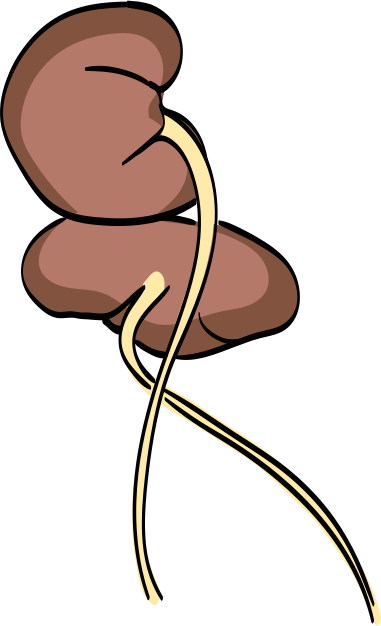
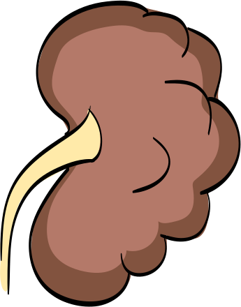
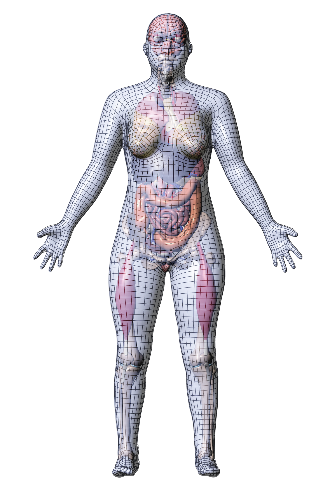
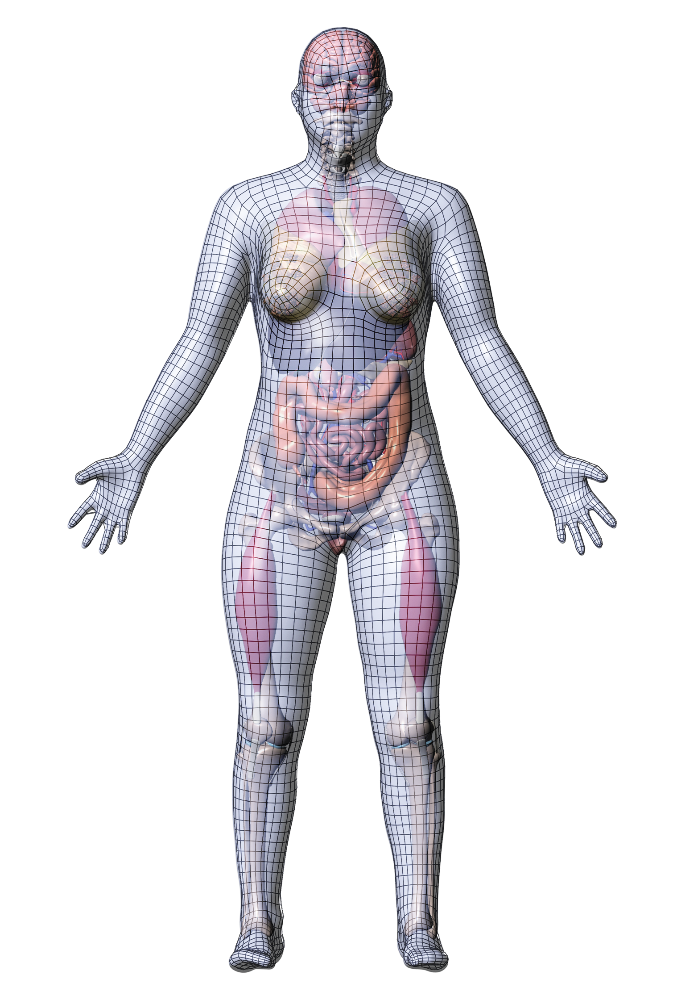
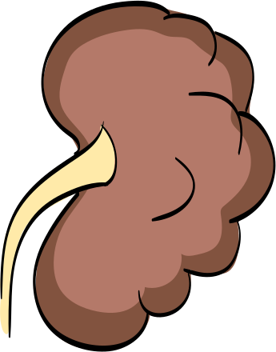
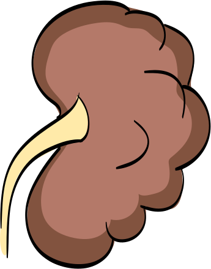

Squiggy: I'm doing great! I found out what cell type I am, I resolved my
identity crisis, AND I got this cool t-shirt.
Squiggy: It's a good thing I wore it today because it's really getting cold
in here.
CeCe: Oh, I do
NOT like seeing that!
Squiggy: What is it,
Ce Ce?
CeCe: It's a kidney
tissue sample, Squig, separated from its home organ and all alone.
Squiggy: Ah, that's no big deal. We can just pick this
little guy up, and the next kidney we come across, we can just stick him in somewhere!
CeCe: No way, Squig!! Don't you know that when you're
trying to identify a tissue sample, it's all about location, location, location!
Squiggy: What do you mean? Just look at that kidney! It
looks the same all over. Just a big brown blob.


CeCe: Well, Squig, that "big
brown blob" contains a great deal of variation.
CeCe: Right kidneys are
different from left kidneys, men's kidneys are different from women's kidneys, and don't get me started
on how kidneys can vary in shape, size, and location from person to person.
CeCe: And while two anatomical
structures may be only millimeters apart, they may be very different in their functions, structures, and
cellular makeup.
Squiggy: In other words, location matters!
Cece: That's what I've been trying to tell you. And that's why it's important that all
tissue samples get registered-not only by name, but also by location.
Squiggy: Well, that sounds impossible. I'm going back to bed.
Cece: It's not hard at all, Squiggy. In fact, there's a tool to make it really easy!
Cece: Researchers can register their tissue sample
data with the Registration User Interface tool in the Human Reference Atlas.
Cece: It takes only about 5 minutes to learn how to
do it and an average of 2 minutes to register a tissue block.
Cece: All researchers need to do is select the
correct organ.
Cece: Then they just adjust the 3D size, location,
and rotation of the tissue block.
Cece: Now this is the fun part. I'm going to need
your help, Squiggy!
Cece: We just need to move this tissue block so that
it's in the same place on this model as it was on the actual organ.
Squiggy: Look at us, CeCe, we're registering tissue!
Cece: Now this is kind of cool. Watch as we move into the space of the 3D model, we'll
see an example of what's known as "collision detection."
Squiggy: Collision!! Ahhh!!! Ce Ce, I knew your crazy adventures would be
the end of me! Oh, goodbye cruel world!
Squiggy: Oh. Well, that was not very dramatic.
Cece: Nope, Squiggy. You supplied ALL the drama we needed.
Cece: You see, what our block is "colliding" with are anatomical structures. The RUI is
just letting us know what our tissue sample is bumping up against as we move it through the organ. This
helps for both placement and identification.
Squiggy: Well, I see what's been registered already, but it
looks like more information is needed.
Cece: That's right, Squig. The Human Reference Atlas
is always looking for more data.
Cece: The more tissue that's registered, and the
more other researchers can benefit from your correctly identified data, the more complete our picture of
the human body becomes.
Cece:And that's a very good thing for understanding
our body in health and disease!
Cece: So click on this link to the Registration User
Interface and register your tissue data today!
Squiggy: And don't forget to spay and neuter your pets!
Cece: Wrong public service announcement, Squiggy.
Squiggy: But it's still a good idea.
Cece: Yeah, I suppose.
External links
If you prefer your demos conducted by whole human beings (and not just individual cells), check
out
this video on the Registration
User Interface.
Now that you've learned about registering tissue data, it's time to go exploring! Visit the Exploration User
Interface.
 



 
